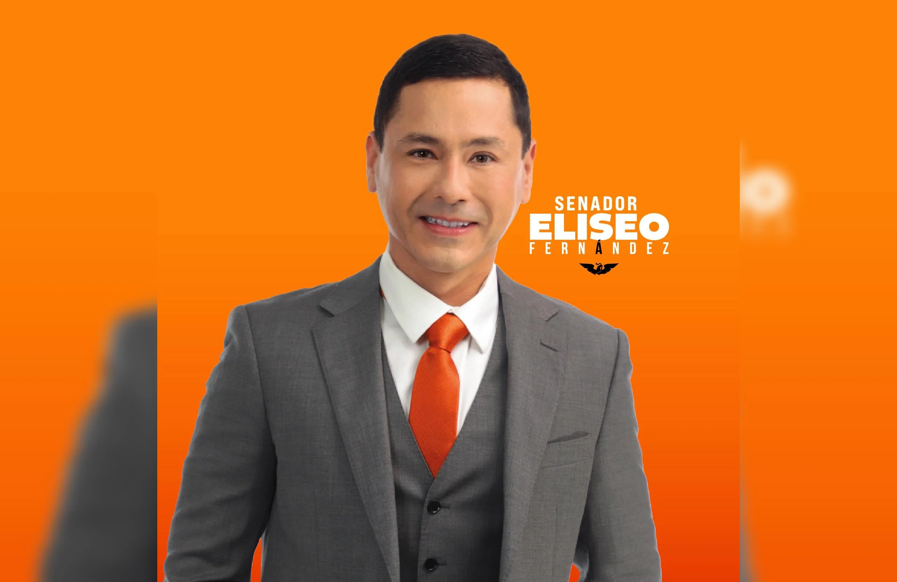
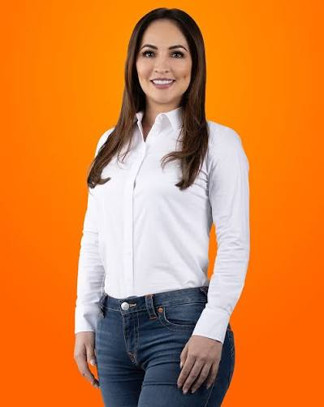
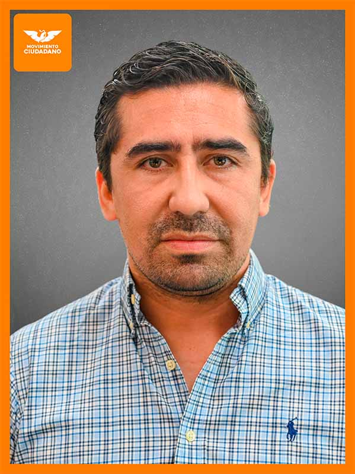

Perfiles Públicos de Candidaturas
Fichas informativas basadas exclusivamente en datos de dominio público: trayectoria, declaraciones y registros oficiales.
100% Información Pública
Sin Datos Personales Sensibles
Población928,363Censo 2020
Lista nominal702,182INE 01 OCT 2026
Participación previa62.85%Gubernatura 2021
GobernadoraLayda Sansores San RománMORENA
Congreso local
Oficialismo 20: MORENA 16PT 2PVEM 2
Oposición 15: MC 10PRI 3PAN 2
En una frase
Campeche dejó de ser una elección cómoda para el oficialismo. Hoy es una competencia abierta que premiará a quien conecte mejor estructura, territorio y decisión.
MORENA
Pablo Gutiérrez Lazarus
Coordinador estatal y virtual abanderado
Layda Sansores
Centro de poder y evaluación del gobierno
MC

Eliseo Fernández Montúfar
Principal figura opositora

Biby Rabelo
Alcaldesa y alternativa competitiva
Perfiles a seguir
Francisco Farías Bailón
MC
Paul Arce Ontiveros
MCChristian Castro Bello
PRINelly Márquez
PANCarrera abierta · Preferencia por partido
FactoMétrica · AGO 2026 · Margen de error ±3.4%
Careo · CE Research · JUL 2026
Qué se elige en 2027
- Gubernatura
- 35 diputaciones locales
- 13 ayuntamientos
- 22 juntas municipales
Lectura estratégica
- La contienda se concentra entre MORENA y MC.
- MORENA conserva gobierno, Congreso y estructura territorial.
- MC concentra el crecimiento y tiene más de un perfil competitivo.
- La unidad de MORENA con PT y PVEM será una variable crítica.
- PRI y PAN pueden influir mediante alianzas y transferencia de voto.
- La elección se definirá por cohesión, candidato y operación territorial.
Percepción
MORENA conserva la maquinaria.
MC concentra el crecimiento.
La elección se decidirá en el territorio.
Fuentes: INE · INEGI · IEEC · Congreso del Estado · FactoMétrica · CE Research — Corte 12 oct 2026
Agentes CE — Monitor en Vivo